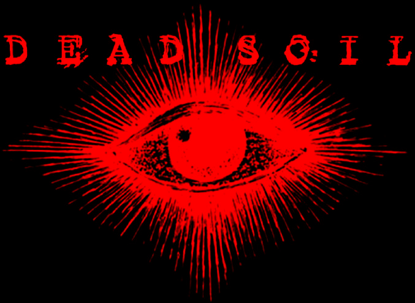
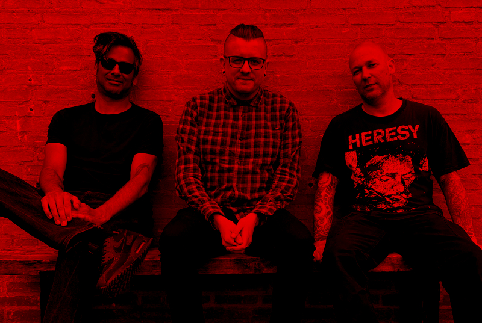

- Watch "Endless (Official Video)"
- Listen on Spotify
- Follow on Instagram
- Listen on Apple Music
- Buy "231" on Cassette Tape
- Listen on Bandcamp
- Listen on YouTube
- Read the lyrics
-
Catch us Live:
- May 18th, 2024: Het Alternatief - Nijmegen NL
For more information or enquiries email us at: hi@deadsoil.bio
Dead Soil is a Doom Industrial band hailing from the Netherlands. Danny: Guitars, Programming. Marc: Bass. Gaya: Vocals, Synths.
